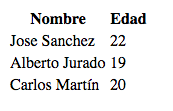

Debemos tener creada una base de datos, si no sabes cómo aquí te lo mostramos. Utilizaremos una base de datos llamada 'alumnos'.
Primero se crean las variables para almacenar los datos de la base de datos que se han de utilizar:
$usuario = "root";
$contrasena = "1234";
$servidor = "localhost";
$basededatos = "alumnos";
Ahora vamos a crear la conexión con el servidor de la base de datos mediante la función mysqli_connect() y las variables que previamente se han creado. Para ello crearemos una variable $conexion que contendrá la conexión.
$conexion = mysqli_connect( $servidor, $usuario, "1234" );
Ahora que se ha realizado la conexión con el servidor de Base de Datos lo que se debe hacer es seleccionar la base de datos a utilizar.
Se utilizará la función mysqli_select_db() mediante el siguiente comando:
$db = mysqli_select_db( $conexion, $basededatos );
Para realizar una consulta se utilizará la función mysqli_query() en donde se indicará la consulta ha realizar.
Antes se guardará la consulta en una variable:
$consulta = "SELECT * FROM alumnos";
Digitamos la función de la siguiente forma:
$resultado = mysqli_query( $conexion, $consulta );
Ahora para mostrar los datos en formato de tabla, primero hacemos la parte de los encabezados:
echo "<table borde='2'>"; Aquí abrimos la tabla
echo "<tr>";
echo "<th>Nombre</th>";
echo "<th>Edad</th>";
echo "</tr>";
Después mediante un WHILE creamos las filas de las tablas
while ($columna = mysqli_fetch_array( $resultado ))
{
echo "<tr>";
echo "<td>" . $columna['nombre'] . "</td><td>" . $columna['edad'] . "</td>";
echo "</tr>";
}
echo "</table>"; Aquí cerramos la tabla
Si ejecutamos el código el resultado sería algo como lo siguiente:

Y por último para cerrar la conexión a la base de datos utilizamos la función mysqli_close() de la siguiente manera:
mysqli_close( $conexion );
Conectar a una Base de Datos MySQL desde PHP. (17-01-2017). De Oscar Abad Folgueira. Recuperado el 28 de abril de 2019 de http://www.oscarabadfolgueira.com/conectar-una-base-datos-mysql-desde-php/
PHP y MySQL, el dúo dinámico. (27-01-2015). En hostname. Recuperado el 28 de abril de 2019 de https://www.hostname.cl/blog/php-y-mysql-el-duo-dinamico